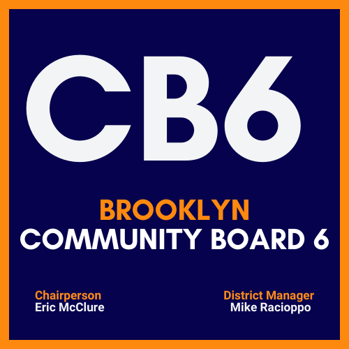
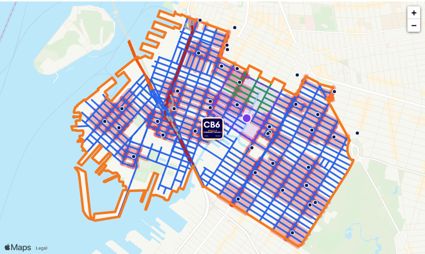
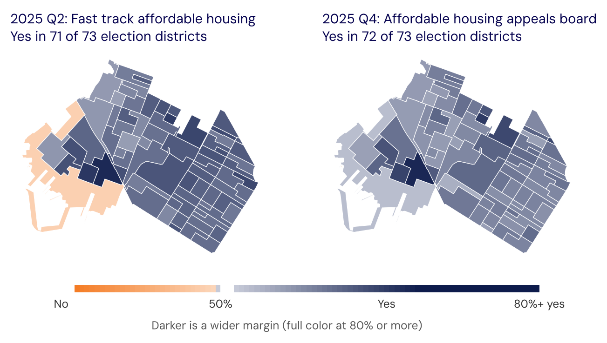
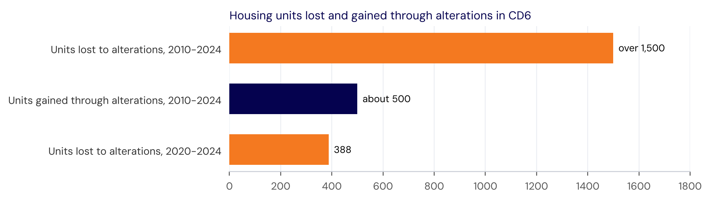
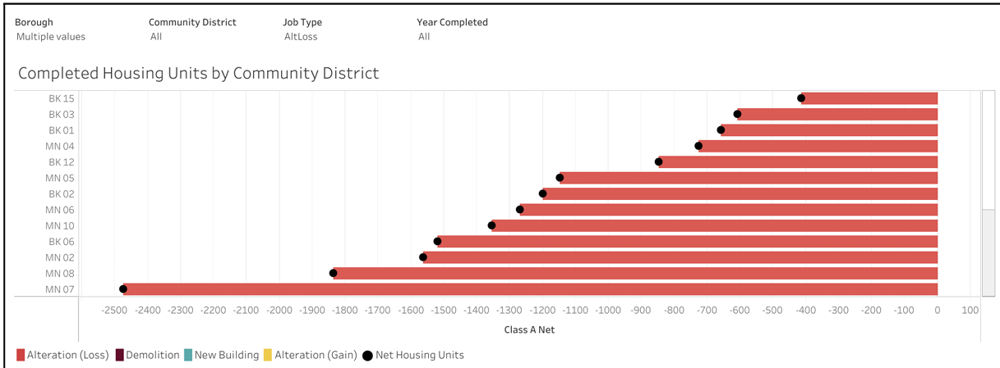
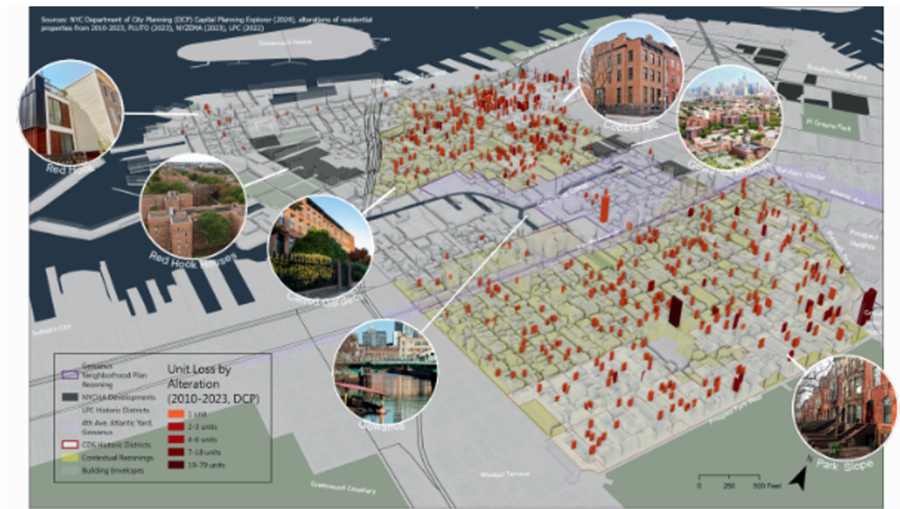
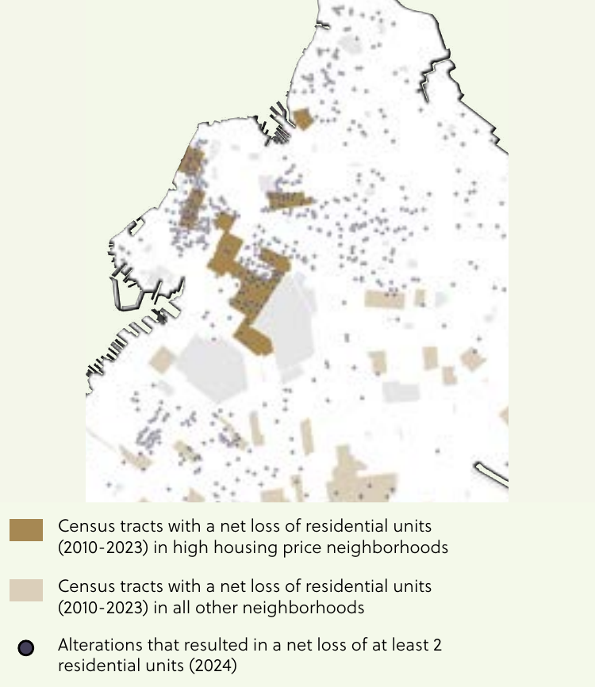
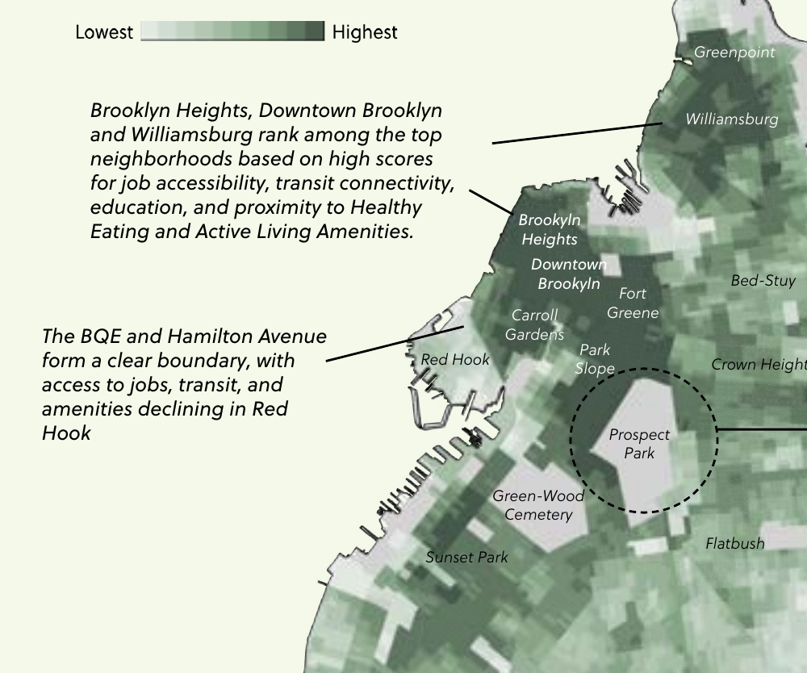
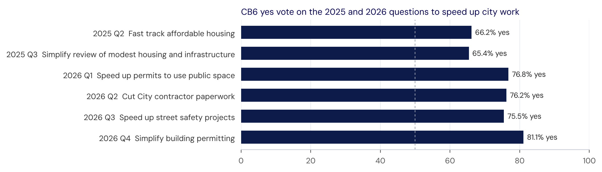
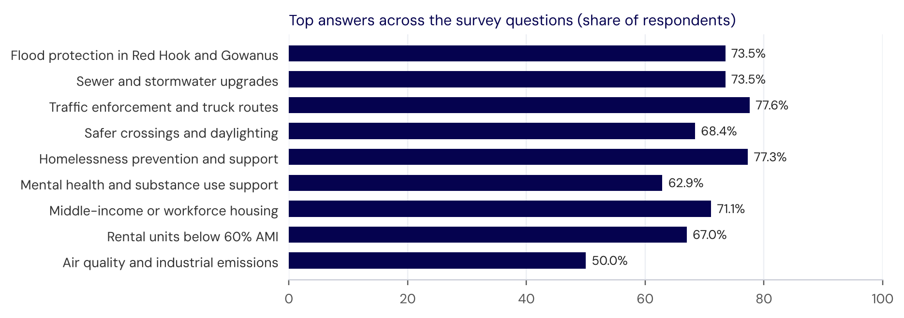

Every year, each of New York City's 59 community boards tells the City what its district needs and what it wants funded. This is ours for Fiscal Year 2028, the City budget year that starts July 1, 2027. We are an advisory board. We do not pass the budget; this is how we get our case in front of the people who do.
Below: our case, starting with housing, then every request, who it goes to and what we do next.
More housing has been our number one priority in this statement for two years running. It costs too much to live here, and the brownstone neighborhoods are losing homes while the rest of the district builds them.
This is what Brooklyn Community District 6 needs this year. It starts with what we see living and working here and what people tell us in emails and calls to our office, then what they told us in our BKCB6 District Needs Survey, and how the district voted on the 2025 and 2026 ballot questions. We weighed all of it against the broader reality of the city's budget and data, and balanced the requests against each other.
Every request has a Next step under it. A step that needs a board vote starts with Board. Everything else is work our office does. Each priority and the Business Affairs & Licenses section end with their own Next steps.
The appendices have every request by agency, the full survey results, the ballot results, and the research behind the housing section.
These are specific requests from this year's survey, from emails to our office, and from what we see on our own blocks. Each is a place where funding, or simply finishing what is already funded, would make a difference people can see.
Red Hook Recreation Area fields. Finish Field 3, which already has lights installed but stalled after its contractor was declared in default, and fund sports lighting for the remaining fields, which go unused on weeknights from November through March. Youth leagues serving about 2,000 kids and a community petition, "Light Up Red Hook," have asked for both.
Next step Ask NYC Parks for a timeline to finish Field 3 and a cost to light the remaining fields.
Next step Board letter supporting the "Light Up Red Hook" petition.
Dog runs. A dog run in Carroll Park; a fenced dog run in the new Gowanus waterfront park at Butler and Nevins Streets planned with DEP's Gowanus Canal CSO facility; support for the Cobble Hill (Upper Van Voorhees) dog park; and resurfacing at the DiMattina dog run. Survey respondents also asked for dog runs at Coffey Park and Valentino Pier.
Next step Ask NYC Parks to scope a dog run in Carroll Park, and ask DEP and NYC Parks to include the fenced dog run in the Butler and Nevins park design.
Carroll Park. Clean, working restrooms, raised repeatedly by residents this year, nets on the basketball hoops, and toddler play upgrades.
Next step Raise the Carroll Park restrooms in testimony at the Council's November 24 Parks and Disabilities hearing on park accessibility.
Valentino Pier. Repair the ground collapsing on both sides of the pier, now behind barricades.
Next step Ask NYC Parks and EDC for a repair timeline, and raise it at the November 24 hearing.
Mother Cabrini Park, Thomas Greene Park and Cobble Hill Park playground. Renovation and upgrades.
Next step Ask our Council Members to fund these upgrades with FY2028 discretionary capital.
Prospect Park. Restrooms, staffing for trash and upkeep, and a safer entrance at Grand Army Plaza.
Next step Ask NYC Parks and the Prospect Park Alliance about restroom and staffing plans and the Grand Army Plaza entrance.
School playgrounds. Open schoolyards to the public after hours, including PS 29, PS 118, PS 372 and PS 39.
Next step Ask DOE and NYC Parks to open the PS 29, PS 118, PS 372 and PS 39 schoolyards after hours.
Red Hook pool and Recreation Center. Two summers in a row the pool opened late because of mechanical failures, in a neighborhood with one of the largest public housing populations in the city and during heat waves. This year the city's pools opened June 27, but Red Hook's stayed closed after the filter plant beneath it flooded. Testing has to start early enough that problems get fixed before opening day, and the pool needs the staff to open fully. On time is not enough, either. With summers getting hotter, the season should start earlier, here and at every city pool. The city's beaches opened May 23; its pools opened June 27 and closed September 13. The Council's Int 262-2026 would run the pool and beach season from the second Saturday in May to the second Sunday in October. Thank you to the Friends of Red Hook Pool for their advocacy. Neighbors should not have to organize just to get a public pool open on time. The longer-term answer is a new building, not more patches on one that is falling apart. The Recreation Center and pool project now has $210 million, $90 million more than last year, and we want to see that money turn into a design and a schedule.
Next step Ask NYC Parks for its 2027 lifeguard and staffing plan for the Red Hook pool and a pre-season testing schedule for its mechanical systems.
Next step Board resolution supporting Int 262-2026 for a longer pool and beach season citywide.
Next step Ask NYC Parks to present the Recreation Center and pool design and timeline to the Transportation, Parks & Public Infrastructure Committee.
Washington Park and J.J. Byrne Playground. The turf resurfacing starts this month. The field needs a maintenance plan so seams and holes get repaired and snow removal does not tear it up again. The water fountains are not part of this work and have to wait for utility work tied to the Old Stone House, which leaves people playing there without water for longer.
Next step Ask NYC Parks for a turf maintenance and winter plan for the field and a date for fixing the fountains.
Safer streets and crossings
Capital funds for hardened daylighting. Fund physical daylighting at intersections across the district, starting with 5th Avenue, which our Transportation Committee voted unanimously on October 21, 2026 to ask DOT to implement now. DOT has pushed 5th Avenue to 2027, and we want it done sooner, with a plan for who maintains it and rain gardens where they can help with flooding. State law is already on our side here. New York's Vehicle and Traffic Law bars parking within 20 feet of a crosswalk at an intersection, and the City exempts itself from that rule. A Council bill to end the exemption, Int 511-2026, is in the Transportation Committee. Even a rule on the books does not hold a corner by itself; paint does not stop a parked truck. That is why we ask for hardened daylighting, and why it needs capital money.
Next step Follow up with DOT on the board's November 2 letter asking that 5th Avenue be daylighted now.
Sammy's Law: 20 mph across the district. For years New York City could not set its own speed limits; Albany did. Sammy's Law, passed in the state's FY2025 budget, lets the City lower limits from 25 to 20 mph, and to 10 mph on streets redesigned for safety, except on roads outside Manhattan with three or more lanes in one direction. It is named for Sammy, who was 12 when a speeding driver killed him in Brooklyn. So far DOT has used it for one Regional Slow Zone in each borough and select streets. In March 2026 we voted for a district-wide 20 mph limit. On October 14, 2026, the Comptroller, three Borough Presidents and the Council Majority Leader asked DOT to go district-wide in every district that has asked, CB6 among them, and 17 community boards have now asked. That letter notes that streets with posted signs saw 39 percent fewer crashes when the citywide limit went from 30 to 25 mph. Our Sammy's Law map (Figure 1a) shows every street in the district by today's posted limit: 862 of its 1,673 street segments would go to 20 mph under our request, and 623 sit in the 15 mph school zones the City has committed to.
Daylighting and Sammy's Law are both state law. On daylighting, the City sets aside a rule the state already wrote. On speed, we needed the state's permission just to set our own limits. Either way, the rule is the cheap part. The signs on every block, the hardened corners, and the physical barriers and enforcement that make a rule stick are what cost money, and that is what we are asking the budget to carry.

Next step Ask DOT for a schedule and a cost estimate to sign every eligible street in the district at 20 mph under the board's March 2026 resolution, and carry that cost in our budget requests.
Real barriers on 9th Street. This board has been on the record on 9th Street for almost twenty years. In 2007 we voted to support DOT's plan for bike lanes and traffic calming there. In 2018, after Joshua Lew and Abigail Blumenstein were killed near 5th Avenue, DOT protected the lanes from 3rd Avenue to Prospect Park West. After Sarah Schick was killed at 2nd Avenue, we approved DOT's plan for the stretch from 3rd Avenue to Smith Street in June 2023 and told the city to start it that summer, and we keep a 9th Street protected bike lane on our list of road safety positions. At DOT's own community meeting that spring, people asked for Jersey barriers. In January 2025 we signed a letter to the Mayor and the DOT Commissioner, with Sarah Schick's widower, Council Member Hanif, Transportation Alternatives and Families for Safe Streets, pointing out that about 75 percent of that stretch had no barriers, that many of the flex posts had already been run over, and that the community had been told the posts were temporary. We asked DOT to replace them with metal bollards, Jersey barriers or planters. The plastic posts trucks have flattened on 9th Street have become an impressive collection at Principles. That makes our point: plastic is not proper policy. People on this street need real barriers.
Next step Letter to DOT asking for a schedule to replace the flex posts on 9th Street between Smith Street and 3rd Avenue with metal bollards, Jersey barriers or planters, and to extend protection to Hamilton Avenue.
Next step Ask the 76th and 78th Precincts for enforcement against trucks parked in the 9th Street bike lane.
Fix bike lanes where they need it, and keep them up. We supported these lanes because a street designed well is safer for everyone on it. That only holds if the job is done right and kept that way. When the paint that marks the lane and guides drivers wears away, when the posts that separate the lane get knocked down and never replaced, the lane stops doing its job, and people who never wanted it are right to say so. We listen to that, even when we disagree about the lane itself, because doing it right is the reason we support it. Fund a proper review and fixes for protected bike lanes where the design is causing problems, starting with Court Street, where residents told us crossing pedestrians cannot see cyclists coming, loading and parking conflict with the lane, and emergency vehicles struggle to get through. Keep bike and pedestrian routes protected through construction, as on 4th Avenue and Court Street. And give DOT a real maintenance budget to repaint lane markings, crosswalks and stop lines, and replace damaged posts on a schedule, not years after they fade.
Next step Ask DOT for a design review of the Court Street lane and a construction protection plan for 4th Avenue and Court Street.
Next step Ask DOT for its repainting and post replacement schedule for the bike lanes in the district, starting with the ones residents have reported.
Flatbush, the bus redesign and Bergen and Dean: where they cross, get it right. We supported the Flatbush Avenue redesign from its earliest versions, and now about a mile of center-running bus lanes is open, with new shelters and dedicated loading zones. It is one piece of a bigger picture: the MTA's Brooklyn Bus Network Redesign is still to come, and DOT is planning the Bergen and Dean Street bike boulevard, which runs right across Flatbush and the routes it feeds. These projects cross each other, on the map and in what they ask of the people using these streets, and that is why it matters that they are done right. Doing it right means enforcement people can see: bus lanes kept clear, loading zones used for loading and not parking, and real fines for blocking the box and laying on the horn. Consistent enforcement with consequences is what changes behavior. It also means thinking about the side streets, which is where low-traffic neighborhoods come in.
Next step Ask DOT and the MTA for camera enforcement of the Flatbush bus lanes and loading zones, and a joint briefing to the board on how the bus redesign and the Bergen and Dean bike boulevard will work where they meet Flatbush.
Next step Ask NYPD for enforcement of blocking the box and unnecessary horn use on Flatbush and Atlantic Avenues.
Money for studies. Fund the studies these decisions need: a comprehensive transportation assessment of the district, a low-traffic neighborhood study for Gowanus, and a truck route study for the residential streets trucks use as shortcuts. The Council's low-traffic neighborhood pilot bill (Int 1070-2026) would give DOT a way to do this, and Gowanus, where people are moving in fast, belongs in it. A low-traffic neighborhood only works if the streets around its edges get the best safety design, so they don't turn into highways.
Next step Transportation, Parks & Public Infrastructure Committee requests the three studies from DOT in writing.
Next step Board resolution supporting Int 1070-2026 and asking that Gowanus be one of its pilot areas.
Construction safety on 4th Avenue, and the signal at 3rd Avenue and 9th Street. Construction on 4th Avenue at 7th Street left people walking and biking with no safe path, and we wrote to DOT about it on September 1. The pedestrian signal at 3rd Avenue and 9th Street keeps getting knocked down; it needs the stop line moved back and bollards to keep cars off the corner.
Next step Follow up with DOT on the September 1 letter, and ask for the stop line and bollards at 3rd Avenue and 9th Street.
Signal timing at St. Johns Place and 8th Avenue, a turn hazard at Dikeman and Van Brunt Streets, and a street light at 37 4th Place that residents say has been out for more than five months despite repeated 311 reports.
Next step Send all three to DOT with the residents' 311 records and track each to a response.
Pedestrian safety at the DEP Gowanus site on Butler Street, where residents report the fence forces people into the street.
Next step Ask DEP to restore a protected walkway along the Butler Street fence.
Columbia Street, the Atlantic Avenue BQE ramps, and the streets around the BQE rebuild. Traffic management, horn enforcement, and safer crossings, including at the Brooklyn Bridge Park entrance. Columbia, Clinton and Court Streets already back up, and the rebuild will push more traffic onto Cobble Hill, Carroll Gardens and Red Hook streets full of kids and emergency vehicles. We need a real traffic mitigation and protection plan for those neighborhoods before construction starts.
Next step Written comment on DOT's BQE Draft Scope of Work by January 11, 2027, covering Columbia Street, the Atlantic Avenue ramps, Union Street over the BQE, the Hamilton Avenue crossing, and a traffic mitigation plan for Cobble Hill, Carroll Gardens and Red Hook during construction.
Next step Ask DOT to present its BQE plan and construction traffic plan to the board.
A crossing guard on Union Street over the BQE, a speed sign where Hamilton Avenue and Hicks Street split, and a safe crossing on Hamilton Avenue under the highway, where Red Hook kids walk from the subway.
Next step Ask the 76th Precinct for a crossing guard post on Union Street, and include all three in the BQE comment.
Lighting and crossings around the Red Hook Houses, including Dwight Street.
Next step Ask NYCHA and DOT for a joint lighting and crossing walk-through at the Red Hook Houses.
A tow truck at every precinct, starting with the 76th and 78th. Blocked hydrants, driveways, bus stops, bike lanes and crosswalks should not wait hours for a tow, and block parties and other permitted events need streets cleared on time.
Next step Letter to NYPD and the 76th and 78th Precincts asking for a dedicated tow truck at each precinct.
Transit
Station access and crowding. Elevators are finally coming to Smith-9th Streets, the tallest station in the system and the only nearby subway station for NYCHA residents in Red Hook, and to 4th Avenue-9th Street. Both are in the MTA's 2025-2029 Capital Plan, and we were there with Senator Gounardes and Assemblymember Simon in August 2025 when the MTA announced it. We wish it had happened a long time ago, and we want them built as soon as possible. Union Street is a different problem: crowding. The platform is too small for the number of people using it, the staircase is very narrow, and the emergency exit almost never works, so parents with strollers get stuck. That's a safety problem, and it's going to get worse as the housing along 4th Avenue fills in. The MTA has fixed crowded stations before. At Bedford Avenue on the L, it built two new platform staircases 50 percent wider than the old ones and doubled stair capacity at the Driggs Avenue end. At 14th Street on the F, M and L, it built four new staircases and widened 21. At Grand Central-42nd Street, it added 14 staircases, widened 24 and made the mezzanine 20 percent bigger. On the rebuilt 42nd Street Shuttle, the Times Square side is now one big island platform. We're asking the MTA to do the same at Union Street: wider stairs, more room on the platform, and emergency exits that work.
Next step Letter to the MTA asking for a review of platform crowding, stairs and emergency exits at Union Street, and for the Smith-9th Streets and 4th Avenue-9th Street elevators to be built as soon as possible.
Next step Testimony at the MTA's 2027 fare and budget hearings once they are scheduled, and a request to Senator Gounardes and Assemblymember Simon to press for the same.
More trains, on time. More trains, running when they're supposed to, means less crowding on the platform. When the state paid for more midday N and R service, average waits went from 10 minutes to 8. In November 2025, congestion pricing money paid for more L trains, from 20 to 22 in the busiest hour of the morning, and more A trains. The research backs this up. The federal Transit Cooperative Research Program looked at service changes in the U.S. and abroad and found that, on average, ridership goes up about half a percent for every 1 percent increase in how often trains run (TCRP Report 95, Ch. 9, p. 9-4). It also found that unreliable service loses even more riders than the extra wait alone would explain, because people can't count on when the next train is coming (p. 9-20). London Transport found that unplanned service losses cost about a third more riders than scheduled cuts (p. 9-20). Waiting feels about twice as bad to riders as time spent on the train (Minutes Matter: A Bus Transit Service Reliability Guidebook, TRB, 2020, Ch. 2). TransitCenter surveyed 3,000 riders in 17 regions, including New York, and frequency and travel time came out on top as what makes riders satisfied. In London, after new signals and new trains, the Victoria line runs 36 trains an hour at the busiest times, one every 100 seconds, which made room for 3,000 more people an hour. We want more R trains at rush hour, running on schedule, and the MTA should publish R on-time numbers for our stations.
Next step Ask the MTA for current rush-hour R frequencies and on-time performance at Union Street and 4th Avenue-9th Street, and for a plan to add R trains with congestion pricing revenue, as it did on the A and L.
Benches at bus stops and more public trash cans.
Next step Request CityBench locations from DOT and trash cans from DSNY for the stops residents named.
Trucks and air
Truck route signage and enforcement on Sackett, Kane, Nelson and Henry Streets, and a truck route plan that takes Bergen Street off the list now that it is slated to be a bike boulevard.
Next step Ask DOT for truck route signage on Sackett, Kane, Nelson and Henry Streets, and ask the 76th Precinct for enforcement.
Next step Ask Council Members Avilés and Hanif to press DOT to drop Bergen Street from the truck route plan.
Warehouse truck pollution. Adopt the warehouse indirect source rule (Int 0053-2026 and DEP's WISER program) and put air quality monitors in Red Hook and Gowanus.
Next step Board resolution supporting Int 0053-2026 (prime sponsor Council Member Avilés; co-sponsors include Council Members Hanif and Restler).
Next step Written comment on DEP's WISER Draft Scope of Work by December 17, 2026, asking for air quality monitoring in Red Hook and Gowanus and truck trip data for each warehouse, by community district.
Next step Ask Assembly Member Jo Anne Simon and Senator Andrew Gounardes, a co-sponsor, to move S1180A, now in the Assembly Ways and Means Committee.
The trucks are also why the Citizens Air Complaint Program matters. It lets anyone report an idling truck or bus and keep part of the fine, and it has changed how companies behave on our streets. Int 561-A would add exemptions and cut the reward from 25 percent of the fine to a flat $125. That would gut one of the few things that works.
Next step Board resolution opposing Int 561-A and supporting the Citizens Air Complaint Program.
E-bikes and delivery workers
Safe e-bike charging and a place for delivery workers. On November 5, six people died in a Sunset Park row house fire where burnt e-bike frames were found outside; the cause is still under investigation. After a successful pilot in 2024, the city still has not installed any public charging, and as of October it had not approved a single permit for sidewalk charging cabinets. We want public charging and battery swap sites in the district, and a delivery worker hub near Atlantic Terminal on 5th Avenue with a bathroom, shade and a place to rest, built together with battery swapping.
Next step Board resolution calling on the city to install public e-bike charging and battery swap sites, including in CB6.
Next step Ask DOT what is holding up its battery swap program and whether a delivery worker hub near Atlantic Terminal can be part of it.
A better way to grade our streets. We looked at the City's cleanliness grades for this district, and while we are glad they are good, the formula does not make much sense. The ratings come from inspectors' drive-by ratings of a sample of blocks, a random spot-check of the city's blocks, and the State Comptroller found that the Scorecard does not give the Sanitation Department information it can act on. Grades that do not match what people see on their own block do not lead to better service. If it takes new money to grade blocks in a way that tracks real conditions, and to send service where it is needed, we are for it.
Next step Ask the Mayor's Office of Operations and DSNY for the block-level data behind CB6's Scorecard ratings and a plan to rate every block, not a sample.
Trash containers. Containers have been proven elsewhere. Since the first Empire Bins went in on West Harlem's streets, 311 rat complaints there dropped by about 25 percent, and our neighbors in Brooklyn Community Districts 2 and 8 are next. There is no reason they would not work here. Parking is not our paramount concern, but the worry about losing it shows why getting the details right matters. When some people expect a policy to fail, and in some sense want it to, implementing it well is what proves it out.
Next step Ask DSNY when CB6 is scheduled for containerization and to present its plan to the board before installation.
Snow on sidewalks. Today property owners must clear the sidewalk in front of their buildings, or face fines. Sidewalks are public space that anyone can walk on, and it would make more sense for the City to clear them the way it clears the streets. We want the City to study what that would cost.
Next step Ask DSNY and OMB for an estimate of what City sidewalk snow clearing would cost, starting with CB6.
Sewer capacity on 15th Street between 5th and 6th Avenues, where residents report flooding as more homes have been added.
Next step Ask DEP for a sewer capacity review of 15th Street.
Con Edison's Nevins Street substation. Con Ed is building an indoor substation at 233 Nevins Street, connected to the hub it is building in Vinegar Hill, because the new housing in Gowanus needs the power. We want it built. In the short term it is a construction project that will fall hardest on Wyckoff Gardens, so Con Ed needs a plan for trees, parking and keeping people informed. The connection route has not been chosen yet. If it can also serve a future Brooklyn Marine Terminal, which will almost certainly need its own power, one dig is better than two.
Next step Con Edison presents the project to the Land Use, Landmarks & Housing Committee.
Next step Letter to Con Edison asking it to plan around Wyckoff Gardens and to weigh the Brooklyn Marine Terminal when it picks the route.
Flood protection and stormwater capacity in Red Hook and Gowanus, the top infrastructure ask in our survey (73.5% each).
Next step Testimony at the Council's December 10 Environmental Protection hearing on the Comprehensive Stormwater Plan, with support for Int 1095, the adopt-a-catch-basin program.
A veterinary clinic in Red Hook, which residents asked us to advocate for this month.
Next step Ask DOHMH and our Council Members about a site and funding for a Red Hook clinic.
Outreach and services at the Prospect Avenue R station, the Smith-9th Street and Union Street areas, and in Gowanus and Park Slope, where residents describe people living on the street without help.
Next step Ask DHS for street outreach coverage at the Prospect Avenue R station and the Smith-9th Street and Union Street areas.
The Wyckoff Gardens community center, which residents describe as old and in need of a rebuild, and after-school and recreation programs in Red Hook.
Next step Ask NYCHA for the community center's capital timeline, and ask our Council Members for discretionary funding.
A third space for teens, especially while the Carroll Gardens library has been closed.
Next step Ask Brooklyn Public Library and DYCD about teen programming and space in the district.
Food access, with residents pointing to the line at CHIPS as evidence of need.
Next step Ask DOHMH to make Red Hook eligible for Shop Healthy.
Brooklyn Community District 6 (CD6) is a high-opportunity district, with destination parks, strong schools and hospitals, cultural institutions, dense transit access, and some of the city's best restaurants. It has also become less diverse, socioeconomically and racially, over recent decades. CD6 is now one of the wealthiest, whitest, and oldest districts in the city.
Our voters have said what they want done about it. They approved the 2025 housing questions in nearly every election district, and this year they approved the building permitting changes with 81.1% of the vote. Survey respondents chose middle-income or workforce housing (71.1%) and rental units below 60% AMI (67%) as their top housing investments (Appendix II).

To open the district to more New Yorkers, we have to address housing of every type: affordable, market-rate, temporary, and shelter. The Borough President's Comprehensive Plan for Brooklyn 2025 names CD6 among the high-access districts that "have not experienced similar development" to Community Districts 1 through 4 (Framework: Health, Wellness + Justice, p. 31), places Park Slope and Carroll Gardens among the highest scores on its Access to Opportunity Index (p. 26, Map 7), and shows Gowanus below its target density (p. 50, Maps 25 and 26). Upzoned corridors such as Fourth Avenue have produced net gains since 2003, while in the brownstone neighborhoods CD6 has the highest unit loss in Brooklyn and the fourth highest citywide, with 1,500 units lost to consolidations from 2010 to 2024. Through alterations alone, owners removed units at three times the rate they added them: over 1,500 lost against roughly 500 gained (Kobert, Findings: Housing Supply, pp. 35-36, Figure 8). Since 2020 the pace has picked up, with 388 units lost to alteration from 2020 to 2024, more than any other community district in the city (p. 35). Before any of this reached the data, CB6's own Landmarks applications recorded more than 120 units lost since 2013 (p. 7).





Federal cuts threaten every one of these needs, especially for our neighbors in public housing who depend on Section 8 and Section 9. Washington stepped back from public housing a long time ago. As The Atlantic laid out, Nixon put a moratorium on new government-financed projects, Reagan cut HUD's budget by 60 percent, and housing vouchers were never made an entitlement, so most families who qualify get no help at all. We live with the result. NYCHA's own assessment puts its 20-year repair needs at $78.6 billion, the cost of decades of underfunding and deferred maintenance, and the Red Hook, Gowanus and Wyckoff Houses carry their share of it in mold, leaks, and broken heat and hot water. The answers are not complicated: fix the apartments we already have, lift the federal cap on building new public housing, and fund vouchers for every family that qualifies. Until Washington does, the City and State have to fill the gap.
We are a small district and an advisory board, and the federal budget is not ours to write. But nothing here exists in a vacuum, and we pick our spots. More money for HUD would make the biggest housing plans in this district better. The Mayor's housing plan, Block by Block, counts the Brooklyn Marine Terminal among its city-owned housing sites, where the approved Vision Plan calls for 6,000 units; we track the plan, district by district, at bkcb6.app/blockbyblock. Every federal housing dollar is more of those homes that can be affordable. On city-owned land, our goal is always 100 percent affordable. That is what the Gowanus rezoning delivered on Public Place, now Gowanus Green: about 950 homes, all of them affordable. And with more money, the City and State could do for this generation what Mitchell-Lama did for an earlier one, and finance new rental and co-op housing that middle-income New Yorkers can afford.
Affordable housing. About 35 percent of households are rent-burdened, concentrated in the district's lower-income communities. BKCB6 is particularly concerned for residents earning less than 40% of Area Median Income, and for affordable senior housing given our aging population.
Market-rate housing. CD6 needs more responsibly developed market-rate housing, among the most expensive in New York. City of Yes for Housing Opportunity, which BKCB6 supported, and the 2025 and 2026 Charter changes our voters approved can create a wider range of options, including missing middle housing.
Temporary housing. Supportive housing and other temporary options for residents facing displacement or leaving shelter prevent homelessness.
Shelter and other housing. Shelter facilities that provide healthcare, employment assistance, and mental health services. We continue to urge HPD to fund, in FY2028, the planning, site acquisition, and construction of affordable senior and special needs housing.
Gowanus is going to beat its numbers. The rezoning planned for about 8,500 new homes, and at the pace buildings are going up it could reach 10,000 or 11,000. That is good news, but school seats, transit and utility capacity were planned for the smaller number; Con Ed's new substation on Nevins Street is a sign of it. Near the rezoning, we are open to private applications like 424 Hoyt Street. Additional housing has been our number one priority in this statement for two years running, and vacant or nearly vacant industrial land should not sit waiting for a manufacturing comeback that is not coming. On Atlantic Yards, Empire State Development's review of Phase II should look at the whole project: what has been delivered, what is still owed, and the affordable apartments people were promised.
250 Baltic Street. There is a housing site directly above our desk. 250 Baltic Street is a five-story, 33,750-square-foot city-owned building that DCAS runs. Our office is on the first floor, and the four floors above have been empty for a couple of years, since the South Beach Psychiatric Center and Families First day care moved out. It is zoned R6 with a C1-3 overlay, so housing would not need a rezoning; it is a block from the Bergen Street F/G; and the floor area already exists. Converting it means kitchens, bathrooms and accessibility work, which is not trivial, but when a vacant lot costs millions, an existing building is a head start. Twice since the other tenants left, Con Edison came close to shutting off the power because it did not think anyone was there. With housing, people will be. Two of the sites on the City's Land Inventory Fast Track (LIFT) list are in our district, Gowanus Green and the Brooklyn Marine Terminal, and we supported both. In August we wrote to the Deputy Mayor for Housing and Economic Development and the DCAS Commissioner asking that 250 Baltic Street be added to the list and become permanently affordable housing, and we are ready to move our office to make that happen.
Next steps
Board resolution supporting adding 250 Baltic Street to the LIFT list as permanently affordable housing.
Follow up with the Deputy Mayor for Housing and Economic Development and DCAS on our August 12 letter, and work with DCAS on relocating our office.
Ask DCP for an updated projection of Gowanus housing by 2035 and whether the rezoning's assumptions for school seats, transit and utilities need to be revisited.
Written comment to Empire State Development on the Atlantic Yards Phase II environmental review when the draft is released.
Written testimony to the Council's Housing and Buildings and Finance committees on the homeownership bills heard November 17 (Ints 861, 862, 1082, 1084, 1091, 1096 and 1097), due 72 hours after the hearing closes.
Board resolution supporting Council Res 9 (the HDFC fairness, preservation and affordability act, A.2707B/S.880B) and Res 363 (the New York Fair Housing Act, S.6958).
Letter to our Members of Congress and Senators Schumer and Gillibrand asking that HUD be funded at no less than its FY2026 level of $84.2 billion before the federal continuing resolution runs out on December 11, 2026, to fund NYCHA's capital repairs, and to lift the federal cap on new public housing.
With over 6,000 dwelling units in the 100-year floodplain, thousands of residents face a 1% chance of a major flood every year. Hurricane Sandy hit NYCHA's Red Hook Houses hardest: residents lost power, heat and water for weeks, and the $560 million FEMA-funded recovery left them with outages and unfinished upgrades for more than a decade (Kobert, Background: Red Hook, p. 21); Ida and Ophelia showed upland streets flood too, and NYC Stormwater Flood Maps show more than a foot of water on 4th Avenue from 1st Street to President Street at 1.77 inches of rain per hour. The Red Hook Coastal Resiliency project broke ground in September 2025, though it is calibrated to 2050 sea level rise and coastal surge, not the interior flooding from Red Hook's high water table (Kobert, pp. 21-22); DEP's Gowanus CSO facilities continue, and further protection is being studied through the Brooklyn Marine Terminal plan. Top priorities:
Coastal mitigation: building retrofits, seawalls, breakwaters, and soft shoreline stabilization.
Urban greenery and permeable surfaces to absorb stormwater, reduce heat, and resist drought.
Sewer capacity, underground storage, and maintained drainage that works in cloudbursts.
Protected electric infrastructure and local solar and storage, especially for Red Hook's grid.
Emergency preparedness for flooding, heat waves, drought, wildfires, and cold snaps.
It takes too long. Our neighbors are not only asking for things; they are tired of how long it takes to get them. The elevators at the 7th Avenue F/G station at 9th Street are the example we know best. In 2015 the MTA told Park Slope that if someone gave it $15 million, it would do the work. Neighbors rallied as far back as 2016, the MTA put the station on its list in December 2020, construction started in February 2022, and the elevators opened on November 21, 2023. We pushed for it in print and were there when they opened. That is seven years from the first rally to a working elevator at one station.
Atlantic Yards was approved in 2006 with a promise to be done by 2016; it missed its May 2025 deadline for 876 of its 2,250 affordable apartments and the project now runs to 2035. The BQE is the clearest case. In 2018 Mayor de Blasio proposed rebuilding the triple cantilever with a temporary highway, backed off after the outcry, and in 2021 put out a plan to keep it going for at least another 20 years. Mayor Adams set that plan aside in 2022 and announced his own in 2023, promising "no more kicking the can." In August 2026 Mayor Mamdani announced a third approach, with construction starting in 2029 or 2030 and finishing in 2040, if it stays on schedule. Three mayors, four plans, and the rebuild still has not started.
Our voters have said the same thing at the ballot box. Every Charter question in 2025 and 2026 that set out to speed up how the City works passed in CB6, and the 2026 questions passed in every one of our election districts (Figure 2a; 2026 figures are the numbers so far from the Board of Elections). This is not one line in the budget, but it is a need: every agency should publish a schedule for what it has promised this district and say so when it slips.

Next step Board letter to the MTA, DOT and Empire State Development asking each for a published schedule, with dates, for its projects in CD6, starting with the Smith-9th Streets and 4th Avenue-9th Street elevators, BQE Central and Atlantic Yards.
On transportation, our voters approved this year's changes to street project approval with 75.5% of the vote, and survey respondents chose traffic enforcement and truck route management (77.6%) and safer crossings and daylighting (68.4%) as their top transportation priorities. The board acted on that this fall: on October 21, 2026, our Transportation, Parks & Public Infrastructure Committee voted unanimously to ask DOT to implement the planned 5th Avenue daylighting as soon as possible, building on the board's 2023 resolution for hardened daylighting at every intersection and its 2026 resolution for a district-wide 20 mph limit under Sammy's Law. Both are state law. The state already bans parking near the corner and the City exempts itself; on speed, it took an act of the Legislature before the City could set its own limits. Passing a rule is the cheap part. Supporting safer streets means paying for what makes it real: capital money for hardened daylighting and physical barriers, signs for a district-wide 20 mph limit, funding to review and fix bike lanes where the design is not working, and funding for the studies that let DOT get it right the first time. We again urge a comprehensive transportation assessment of the district: Red Hook remains a transit desert, freight from last-mile warehouses fills residential streets, and the R stations along 4th Avenue were not built for the number of people who now live there.
Then there are the trucks. Traffic pollution contributes to an estimated 320 premature deaths and 870 emergency room visits and hospitalizations a year in New York City, and half of our survey respondents (50.0%) said air quality and industrial emissions need urgent investment. Red Hook has watched last-mile warehouses and their truck traffic move in fast. We support Int 0053-2026, Council Member Alexa Avilés's bill directing DEP to adopt an indirect source rule for warehouses of 50,000 square feet or more, co-sponsored by Council Members Shahana Hanif and Lincoln Restler, and DEP's proposed version of that rule, the Warehouse Indirect Source Emissions Reduction (WISER) program. We also support State Senate bill S1180A, which sets stricter requirements near schools, hospitals and disadvantaged communities and makes warehouse operators report their truck trips publicly. The rule should give credit for moving freight by water and rail, including Blue Highways and a working port at the Brooklyn Marine Terminal, and it should come with air quality monitors in Red Hook and Gowanus.
Next steps
Board resolution supporting Int 0294-2026 and Int 0944-2026, reduced-fare Citi Bike for public high school students 16 and older and for CUNY students, which match our bikeshare request; testimony at the Council's December 2 Citi Bike hearing.
Ask DOT for a schedule to carry out the board's March 2026 Sammy's Law resolution for a district-wide 20 mph limit.
District averages hide wide gaps. Park Slope, Cobble Hill, and Carroll Gardens are among the most educated, wealthy, and employed parts of the city, while nearly 10% of the district lives in NYCHA housing, including the Red Hook Houses, the city's second-largest NYCHA complex. Average life expectancy in parts of Red Hook drops to 75 years, against 81 for Brooklyn as a whole (Comprehensive Plan, p. 23, Map 1). Federal cuts to insurance coverage, SNAP and energy assistance will fall hardest on our census tracts with higher poverty and unemployment. The November plan adds administrative SNAP spending tied to federal cuts; the need here goes further. Survey respondents most often chose homelessness prevention and support (77.3%) and mental health and substance use support (62.9%). We recommend targeted investment in Red Hook and Gowanus in:
Affordable healthcare, far from public or nonprofit hospitals and primary care.
Childcare: the district has about 7,500 children under 5 and only 7 childcare facilities that accept vouchers or cash assistance.
Affordable food, amid reduced SNAP eligibility.
Workforce development where major economic development is coming without local job training.
Health assessments and interventions for poor air and soil quality and chronic illness.
Public libraries: 0.5% of the city budget for hours, programs, and heating and cooling access during closures.
Culturally and linguistically specific programs, run by community organizations.
Foster care prevention and support for youth aging out of care.
Services have to reach people in a way they can use. Our district includes immigrant families, NYCHA residents, older adults and young people, and the programs that work best for them are often run by community organizations that speak their language and know their culture. The Council recognized this when it created a $3 million Culturally Specific Gender-Based Violence Initiative in the FY2026 budget for grassroots groups serving immigrant survivors. That approach should be funded and kept, not renewed one year at a time.
Foster care belongs in this budget too. The City has fewer than 6,300 children in foster care, down from 13,000 a decade ago, which shows what prevention and family support can do. The work is not done: in the 2024-25 school year, 55 percent of students in foster care were chronically absent. The FY2027 budget moved $97.5 million in foster care payments from federal to City funds because federal eligibility rules have not kept up, the State sets foster care rates and the City typically adds funding each year to cover the increases, and in June an op-ed in City Journal reported plans to cut almost $3 million in foster care prevention services. We want prevention funded, support for young people aging out of care, and the rate increases for foster, kinship and adoptive parents covered in full.
Our Human Services and Environmental Sustainability Committee shows what this looks like in practice, on almost no budget. Since it restarted, it has held workshops on gender-based violence, immigrant rights, mental health and reproductive justice. It brought in Womankind and the NYC Alliance Against Sexual Assault on gender-based violence, Project LETS for a youth mental health workshop in March 2026, Weill Cornell's Center for Elder Abuse Solutions on its helpline for people worried about an older adult in May 2026, and NYC Emergency Management and DEP's green roof grant program in April 2026. Committee members also sit on a working group with Council Member Hanif's office on Section 3, which is meant to make sure government money for NYCHA pays for job training and jobs for NYCHA residents. The organizations doing this work need steady funding so neighbors can find them all year, not only on the night they visit a committee meeting.
Next steps
Testimony at the Council's FY2028 preliminary budget hearing for ACS asking to fund foster care prevention, supports for youth aging out of care, and rate increases for foster, kinship and adoptive parents.
Ask our Council Members to renew the Culturally Specific Gender-Based Violence Initiative and fund culturally and linguistically specific mental health programs at organizations serving the district.
Testimony at the Council's December 14 Aging and General Welfare hearing on addressing New York City's aging homeless population.
Testimony at the Council's December 2 Early Childhood Education hearing on contracts for early childhood education services, using the district's 7,500 children under 5 and 7 voucher-accepting providers.
Improve NYCHA housing: Fund mold remediation, plumbing, and HVAC repairs against NYCHA's $78.6 billion in 20-year needs; 11% of CD6 renters are NYCHA tenants. Negotiated community reinvestment does not replace NYCHA's responsibility to maintain Gowanus and Wyckoff Houses through Comprehensive Modernization.
Support deeply affordable housing: Fund construction and subsidies below 30% AMI, with emphasis on senior and family-sized units.
Improve conditions for market-rate housing: Use preservation programs and incentives for natural affordability, accessibility, and aging-in-place, and allow more density through adaptive reuse and new development in contextual and landmarked areas.
Increase affordability with better zoning and funding: Maximize affordable units in rezoned areas and on City-owned sites, following Gowanus Green, and let HPD combine programs such as SARA in one development.
Prioritize community input for future NYCHA construction: Use the Gowanus Houses and Wyckoff Gardens visioning sessions in future RFPs.
Turn 250 Baltic Street into affordable housing: Add the city-owned building, four empty floors above our office, to the LIFT list as permanently affordable housing.
Plan for Gowanus growth: Update the rezoning's projections for school seats, transit and utilities, and keep housing applications near the study area, like 424 Hoyt Street, on the table.
Fund public parks: Fund NYC Parks, restore staffing, and fund the park requests listed above, including a new Red Hook Recreation Center and pool.
Public e-bike charging and battery swapping, and a delivery worker hub near Atlantic Terminal.
Low-traffic neighborhoods: A Gowanus pilot under Int 1070-2026, with safe boundary streets.
Capital funds for hardened daylighting: Physical daylighting at intersections district-wide, starting with 5th Avenue.
Sammy's Law: Sign every eligible street in the district at 20 mph, as the board voted in March 2026.
Fix and maintain bike lanes: Fund design review and fixes where protected lanes are causing problems, starting with Court Street; protected routes during construction; and regular repainting of markings and replacement of damaged posts; real barriers on 9th Street.
Fund studies: A comprehensive transportation assessment, a Gowanus low-traffic neighborhood study, and a truck route study.
Expand bicycle parking: On-street corrals where delivery cyclists gather, combined with daylighting.
Improve bikeshare affordability: Reduced Fare Citi Bike for public high school and CUNY students 16 and older, and a $3 e-bike cap within Brooklyn.
Improve safety on school streets: Barriers, signage, and faster approvals for every CD6 school.
Fix the BQE: Long-term southern BQE improvements that improve street safety and the public realm.
Redesign Vision Zero priority corridors: 9th Street, 5th Avenue, 3rd Avenue, Court Street, Smith Street, Flatbush Avenue, and Atlantic Avenue.
Overhaul transportation infrastructure: A comprehensive plan covering protected bike lanes, curb extensions, crosswalks, loading zones, freight management including Blue Highways, and low-traffic neighborhoods.
Enhance subway and bus infrastructure: Build the Smith-9th Streets and 4th Avenue-9th Street elevators in the 2025-2029 Capital Plan as soon as possible; wider stairs, more platform space and working emergency exits at Union Street; more frequent rush-hour R service; elevators and ramps (only the 7th Avenue F/G station in CD6 has elevators); restore the B71; and transit-signal priority and center-running bus lanes on Flatbush Avenue.
Increase traffic enforcement: Move parking enforcement from NYPD back to DOT, as the board voted in April 2026; a tow truck at every precinct, starting with the 76th and 78th, including for block parties and permitted events; truck route signage and enforcement; loading zones; and more red-light, speed, and bike-lane cameras.
Continue Open Streets: DOT found Open Streets brought higher sales growth and fewer closures; keep supporting outdoor dining.
Promote affordable groceries, with Red Hook a priority.
Improve rent affordability for small businesses: Support for small and legacy businesses (71.7%) was respondents' top business corridor priority; preserve affordable industrial and artist space in Red Hook and Gowanus.
Keep supporting our BIDs, and the Gowanus BID formation effort: The Park Slope Fifth Avenue, Atlantic Avenue and North Flatbush BIDs keep our corridors clean, safe and full of small businesses, and they have our continued support. Gowanus needs the same. As part of the rezoning, the City committed that SBS would support creating a Gowanus BID, and the local steering committee has been working on it since 2021. With thousands of new homes coming to the canal, Gowanus needs an organization whose job is its sidewalks, its public spaces and the businesses that were there first. Almost a third of survey respondents (30.3%) asked for more BIDs.
Expand local workforce development in Red Hook, Gowanus, and NYCHA, including direct-entry union training and Industrial Business Zone jobs.
Next steps
Ask SBS which CB6 commercial corridors can get a Commercial District Needs Assessment next, starting with Red Hook.
Board letter supporting the Gowanus BID when its formation comes before the City.
Ask SBS for the Gowanus BID formation timeline and what it needs from the board to keep moving.
Keep supporting Open Streets and outdoor dining applications that come through the Business Affairs & Licenses Committee.
Expand childcare for children under 5.
Expand healthcare options: Permanent, low-cost facilities in Red Hook, Gowanus, and the Columbia Waterfront; CD6 has no NYC Health + Hospitals facility.
Increase access to healthy food, and make Red Hook eligible for DOHMH's Shop Healthy!
Support people experiencing homelessness with shelter, mental health services, job training, and outreach.
Support survivors of domestic and sexual abuse, and expand Rape Crisis Program capacity in Brooklyn.
Fund culturally specific programs: Programs run by community organizations in the languages and cultures of the people they serve, including the Culturally Specific Gender-Based Violence Initiative.
Fund foster care: Prevention services, supports for youth aging out of care, and full rate increases for foster, kinship and adoptive parents.
Build and maintain community centers, including at the Red Hook Houses and Wyckoff Gardens.
Protect vulnerable areas against flooding with fixed and deployable barriers and drainage.
Improve resilience to extreme weather: Heating and cooling centers, tenant flood protection, and retrofit help for owners.
Upgrade green infrastructure and stormwater systems, especially in Red Hook and the Gowanus watershed, and require future projects to use at least 2100, 100-year projections.
Cut warehouse truck pollution: Adopt the indirect source rule (Int 0053-2026, WISER) with air quality monitoring in Red Hook and Gowanus.
Keep the Citizens Air Complaint Program: Oppose Int 561-A.
| Agency | Request | Type | Priority / Committee |
|---|---|---|---|
| HPD | Incentives for preservation, adaptive reuse and new development | Capital / Programmatic | P1 / Land Use, Landmarks & Housing |
| HPD | FY2028 funds for affordable senior and special needs housing | Capital | P1 / Land Use, Landmarks & Housing |
| HPD | Deeply affordable housing (below 30% AMI) | Capital | P1 / Land Use, Landmarks & Housing |
| HPD | Integrate multiple programs in one building (e.g., SARA) | Programmatic | P1 / Land Use, Landmarks & Housing |
| DCAS / HPD | Add 250 Baltic Street to the LIFT list and convert its four vacant floors to permanently affordable housing | Capital | P1 / Land Use, Landmarks & Housing |
| HPD | Maximize affordable housing on City-owned sites | Capital | P1 / Land Use, Landmarks & Housing |
| NYCHA | Mold, plumbing and HVAC repairs | Capital | P1 / Land Use, Landmarks & Housing |
| NYCHA | Community centers, including Wyckoff Gardens and Red Hook Houses | Capital / Programmatic | P1 / Land Use, Landmarks & Housing |
| NYCHA | Lighting and security around the Red Hook Houses | Capital | P1 / Land Use, Landmarks & Housing |
| NYPD | A dedicated tow truck at every precinct, starting with the 76th and 78th, including for block parties and permitted events | Capital / Programmatic | P2 / Transportation, Parks & Public Infrastructure |
| NYPD | ADA retrofits at the 76th and 78th precinct buildings | Capital | P2 / Transportation, Parks & Public Infrastructure |
| DOT | Hardened daylighting district-wide, starting with 5th Avenue | Capital | P2 / Transportation, Parks & Public Infrastructure |
| DOT | 20 mph signage on every eligible street in the district under Sammy's Law | Expense | P2 / Transportation, Parks & Public Infrastructure |
| DOT | Hardened barriers (bollards, Jersey barriers or planters) on 9th Street, Smith Street to 3rd Avenue; extend protection to Hamilton Avenue | Capital | P2 / Transportation, Parks & Public Infrastructure |
| DOT | Bike lane design review and fixes, starting with Court Street; protected routes during construction; regular repainting of markings and post replacement | Capital / Programmatic | P2 / Transportation, Parks & Public Infrastructure |
| DOT | Studies: comprehensive transportation assessment, Gowanus low-traffic neighborhood, truck routes | Programmatic | P2 / Transportation, Parks & Public Infrastructure |
| DOT | Signal timing at St. Johns Pl & 8th Ave; Dikeman & Van Brunt turn safety; street light at 37 4th Place | Capital | P2 / Transportation, Parks & Public Infrastructure |
| DOT | Crossing guard on Union St over the BQE; speed signage at Hamilton Ave and Hicks St; Hamilton Ave crossing under the highway | Programmatic / Capital | P2 / Transportation, Parks & Public Infrastructure |
| DOT | School street materials and faster approvals | Programmatic | P2 / Transportation, Parks & Public Infrastructure |
| DOT / MTA | Vision Zero corridor and intersection redesigns | Capital | P2 / Transportation, Parks & Public Infrastructure |
| DOT | Bicycle parking corrals with daylighting; bus stop benches | Capital | P2 / Transportation, Parks & Public Infrastructure |
| MTA | Build the Smith-9th Streets and 4th Avenue-9th Street elevators as soon as possible; wider stairs, more platform space and working exits at Union Street; more rush-hour R trains | Capital | P2 / Transportation, Parks & Public Infrastructure |
| MTA | Station accessibility district-wide, restore B71, transit-signal priority | Capital | P2 / Transportation, Parks & Public Infrastructure |
| DOT / NYPD | Traffic enforcement, truck route signage, cameras | Programmatic | P2 / Transportation, Parks & Public Infrastructure |
| DPR | New Red Hook Recreation Center and pool; pre-season pool testing and full staffing; a longer pool season citywide (Int 262-2026) | Capital / Programmatic | P2 / Transportation, Parks & Public Infrastructure |
| DPR | Washington Park / J.J. Byrne: turf maintenance plan and water fountain repair | Capital / Programmatic | P2 / Transportation, Parks & Public Infrastructure |
| DOT | Public e-bike charging and battery swap sites; delivery worker hub near Atlantic Terminal | Capital / Programmatic | P2 / Transportation, Parks & Public Infrastructure |
| DOT | Gowanus low-traffic neighborhood pilot (Int 1070-2026) | Programmatic | P2 / Transportation, Parks & Public Infrastructure |
| DOT | BQE construction traffic mitigation for Cobble Hill, Carroll Gardens and Red Hook; Bergen Street off the truck route plan | Programmatic | P2 / Transportation, Parks & Public Infrastructure |
| DCP | Updated Gowanus housing projection and infrastructure needs (schools, transit, utilities) | Programmatic | P1 / Land Use, Landmarks & Housing |
| DPR | Fully fund NYC Parks and restore staffing | Programmatic | P2 / Transportation, Parks & Public Infrastructure |
| DPR | Red Hook Recreation Area: finish Field 3 and add sports lighting | Capital | P2 / Transportation, Parks & Public Infrastructure |
| DPR | Dog run in Carroll Park; Cobble Hill and DiMattina dog run upgrades | Capital | P2 / Transportation, Parks & Public Infrastructure |
| DPR | Carroll Park restrooms and courts; Mother Cabrini, Thomas Greene and Cobble Hill Park upgrades | Capital | P2 / Transportation, Parks & Public Infrastructure |
| DPR / EDC | Valentino Pier repairs | Capital | P2 / Transportation, Parks & Public Infrastructure |
| DPR / DOE | Schoolyards open to the public after hours | Programmatic | P2 / Transportation, Parks & Public Infrastructure |
| DEP / DPR | Dog run in the Gowanus waterfront park at Butler and Nevins | Capital | P2 / Transportation, Parks & Public Infrastructure |
| DEP | Pedestrian safety at the Butler Street CSO site | Capital | P2 / Human Services & Environmental Sustainability |
| DEP | Sewer capacity on 15th St (5th-6th Aves) and district-wide; CSO and stormwater upgrades | Capital | P2 / Human Services & Environmental Sustainability |
| DEP | Green infrastructure in the Gowanus watershed and Red Hook | Capital | P2 / Human Services & Environmental Sustainability |
| DEP | Fixed and deployable flood barriers, drainage | Capital | P2 / Human Services & Environmental Sustainability |
| DEP | Warehouse indirect source rule (WISER): implementation, air quality monitoring and per-warehouse truck trip data in Red Hook and Gowanus | Programmatic | P2 / Human Services & Environmental Sustainability |
| DSNY / Operations | Rate every block for cleanliness, not a sample, and direct service by it | Programmatic | Human Services & Environmental Sustainability |
| DSNY | Containerization (Empire Bins) in CB6 | Capital / Programmatic | Human Services & Environmental Sustainability |
| DSNY / OMB | Study the cost of City clearing of sidewalk snow | Programmatic | Human Services & Environmental Sustainability |
| DOT / MTA | Camera enforcement of Flatbush bus lanes and loading zones; coordinate the Brooklyn Bus Network Redesign and the Bergen and Dean bike boulevard | Programmatic | P2 / Transportation, Parks & Public Infrastructure |
| DSNY | More public trash cans | Programmatic | P2 / Human Services & Environmental Sustainability |
| SBS | Workforce development in Red Hook, Gowanus, NYCHA | Programmatic | P3 / Business Affairs & Licenses |
| SBS | Continued support for the Park Slope Fifth Avenue, Atlantic Avenue and North Flatbush BIDs; Gowanus BID formation; Commercial District Needs Assessments | Programmatic | Business Affairs & Licenses |
| DOT / SBS | Open Streets and outdoor dining support | Programmatic | Business Affairs & Licenses |
| DOHMH | Shop Healthy! expansion to Red Hook | Programmatic | P3 / Human Services & Environmental Sustainability |
| ACS | Foster care prevention services, supports for youth aging out of care, and rate increases for foster, kinship and adoptive parents | Expense | P3 / Human Services & Environmental Sustainability |
| DOHMH / DYCD | Culturally and linguistically specific programs run by community organizations, including the Culturally Specific Gender-Based Violence Initiative | Programmatic | P3 / Human Services & Environmental Sustainability |
| DOHMH / EDC | Veterinary clinic in Red Hook | Capital / Programmatic | P3 / Human Services & Environmental Sustainability |
| DHS / DOHMH | Street outreach and mental health services, including at the Prospect Ave R station | Programmatic | P3 / Human Services & Environmental Sustainability |
| DYCD / Libraries | Teen spaces, after-school and recreation; library hours and heating/cooling access | Programmatic | P3 / Human Services & Environmental Sustainability |
| DOE / ACS | Childcare for children under 5 | Programmatic | P3 / Human Services & Environmental Sustainability |
| DHS / HRA / ENDGBV | Shelters and survivor support programs | Programmatic | P3 / Human Services & Environmental Sustainability |
| NYC H+H | Permanent low-cost healthcare in Red Hook, Gowanus, Columbia Waterfront | Capital | P3 / Human Services & Environmental Sustainability |
BKCB6 ran its FY 2028 District Needs Public Survey on Google Forms and promoted it in the newsletter, on social media, on bkcb6.app and in the BKCB6 app. Respondents could pick more than one answer, so percentages add to more than 100.

Which policy and budget areas should BKCB6 focus on most in FY2028?
| Area | Share |
|---|---|
| Transportation and street safety | 75.8% |
| Climate resilience and flood protection | 62.6% |
| Parks and open spaces | 55.6% |
| Affordable and market-rate housing | 50.5% |
| Economic development and small business support | 43.4% |
| NYCHA repairs and public housing improvements | 27.3% |
| Health, food access, and environmental quality | 25.3% |
| Access to childcare and family services | 19.2% |
| Other | 7.1% |
Which housing investments should be prioritized?
| Investment | Share |
|---|---|
| Middle-income or workforce housing | 71.1% |
| More affordable rental units (below 60% AMI) | 67.0% |
| NYCHA repairs and modernization | 42.3% |
| Senior housing | 22.7% |
| Incentives for accessory dwelling units or gentle density | 19.6% |
| Supportive or transitional housing | 10.3% |
Which environmental or infrastructure investments are most urgent?
| Investment | Share |
|---|---|
| Flood protection in Red Hook and Gowanus | 73.5% |
| Sewer and stormwater system upgrades | 73.5% |
| Air quality and industrial emissions | 50.0% |
| Green infrastructure (rain gardens, bioswales, trees) | 37.8% |
| Solar or renewable power | 30.6% |
| Other | 3.1% |
What transportation improvements matter most?
| Improvement | Share |
|---|---|
| Traffic enforcement and truck route management | 77.6% |
| Safer pedestrian crossings and daylighting | 68.4% |
| Better bus connections, including restoring the B71 | 46.9% |
| Subway accessibility upgrades | 42.9% |
| More protected bike lanes | 36.7% |
| Other | 13.3% |
What improvements would you like for local business corridors?
| Improvement | Share |
|---|---|
| Support for small and legacy businesses | 71.7% |
| Cleaner and safer streetscapes | 62.6% |
| Affordable grocery access in underserved areas | 52.5% |
| More outdoor dining and Open Streets | 37.4% |
| Expansion of Business Improvement Districts | 30.3% |
| Other | 7.1% |
Which community services should be expanded or better funded?
| Service | Share |
|---|---|
| Homelessness prevention and support | 77.3% |
| Mental health and substance use support | 62.9% |
| Food access and nutrition programs | 50.5% |
| Workforce development and job training | 45.4% |
| Childcare access | 44.3% |
| Senior services | 38.1% |
| Other | 1.0% |
Results for Brooklyn Community District 6 from Ballot Breakdown. 2026 figures are the numbers so far from the Board of Elections.
| Year | Question | Yes share in CB6 | Election districts voting yes |
|---|---|---|---|
| 2025 | 2. Fast track affordable housing | 66.2% | 71 of 73 |
| 2025 | 3. Simplify review of modest housing and infrastructure projects | 65.4% | 71 of 73 |
| 2025 | 4. Establish an affordable housing appeals board | 62.5% | 72 of 73 |
| 2025 | 5. Create a digital city map | 89.0% | 73 of 73 |
| 2026 | 1. Remove mandatory public hearings and Council review for certain uses of public space | 76.8% | 72 of 72 |
| 2026 | 2. Procurement Policy Board authority | 76.2% | 72 of 72 |
| 2026 | 3. Changes to street project approval, city property disposition and office leasing | 75.5% | 72 of 72 |
| 2026 | 4. Changes to building permitting | 81.1% | 72 of 72 |
| 2026 | 5. Contribution targets for the rainy day fund | 81.9% | 72 of 72 |
Read the thesis. Passages cited in this statement, by printed page:
Read the Comprehensive Plan. Maps and passages cited in this statement, by printed page:
Transport for London, Victoria line celebrates 50 years (Aug 2018)
Brooklyn Post, Mar 12, 2019 (Bedford Av L stairs and mezzanine)
Greenpointers, Oct 22, 2020 (Bedford Av L station improvements)
MTA, three new elevators connecting 14 St F/M and L stations
MTA, completion of Grand Central-42 St station upgrade project (Oct 28, 2025)
Governor Hochul, MTA increases weekday service on A and L lines (Nov 3, 2025)
Brooklyn Eagle, "It's not too late to do the right thing on the BQE" (2018 de Blasio plan)
Brooklyn Downtown Star, "As BQE Cantilever Deteriorates, Officials at Odds Over Fix" (Dec 18, 2024)
BKCB6 op-ed, Brooklyn Paper, "Elevator budgets and billionaires" (7th Avenue F/G elevator)
Patch, Jun 9, 2025 (7th Avenue F/G elevator opening, photo caption)
Patch, "Elevator Installed At F, G Station In Brooklyn" (Nov 2023)
Brooklyn Paper, "A long time coming: Three new elevators open at 7th Avenue station" (2023)
Brooklyn Paper, Jan 1, 2021, p. 6 (7th Avenue slated for an elevator)
Brooklyn Paper, Feb 11, 2022, p. 10 (7th Avenue elevator construction begins)
City Limits, "Ever-shifting Pacific Park plan" (2035 buildout horizon)
Gothamist, May 29, 2025 (Atlantic Yards affordable housing deadline)
MTA, Station Accessibility Upgrades (2025-2029 Capital Plan list; 95% accessible by 2055)
Sen. Gounardes, AM Simon, MTA Announce Elevator Access Coming to Smith-9th Street (Aug 8, 2025)
NYC Council, Int 0053-2026, Regulation of indirect sources of air pollution
NYC DEP, Warehouse Indirect Source Emissions Reduction (WISER) program
NYC Mayor's Office of Climate & Environmental Justice, Reducing Truck Pollution
NY State Senate, S1180A (Gianaris), indirect source review for warehouses
City Limits, "Next-Day Delivery Shouldn't Mean Polluted Air" (Sept 14, 2026)
Ballot Breakdown, BKCB6 (2025 and 2026 results by election district)
City & State: NYC budget grows $3 billion in November modification (Nov 2026)
NAAHL: White House's FY27 Budget Proposes Deep Cuts to Affordable Housing (Apr 2026)
Novogradac: Trump Administration Releases FY 2027 Budget Request (Apr 3, 2026)
U.S. House results: The Associated Press, as of Nov 17, 2026, 2:57am ET
NYC Council, Int 1070-2026, low-traffic neighborhood pilot program
NY1, City Council weighs changes to idling complaint program (Oct 21, 2026)
Streetsblog NYC, Sunset Park fire and e-bike charging (Nov 5, 2026)
Streetsblog NYC, Brooklyn Community Board Supports DOT's 9th Street Plan (Jun 14, 2007)
NYC DOT, 9th Street Street Safety Upgrades, presentation to CB6 (May 17, 2023)
Patch, Start BK Ninth Street Bike Safety Upgrades This Summer, CB6 Tells City (Jun 20, 2023)
Letter to Mayor Adams and DOT Commissioner Rodriguez on 9th Street, signed by Brooklyn Community Board 6, Council Member Hanif, Transportation Alternatives, Families for Safe Streets and Maxime Le Mounier (Jan 10, 2025)
Brownstoner, Gowanus Locals Move to Form BID to Protect Businesses, Longtime Residents
Letter from Brooklyn Community Board 6 to Deputy Mayor Bozorg and DCAS Commissioner Kitasei on 250 Baltic Street (Aug 12, 2026)
The Atlantic, Ideas, on HUD and the housing crisis (December 2023)
The Real Deal, Task force advances $3.5B overhaul of Brooklyn Marine Terminal (Sept 22, 2025)
HPD, HPD Announces 100 Percent Affordable Housing Project in Gowanus (Nov 19, 2020)
Mayor's Office, Mayor Mamdani Kicks Off Outdoor Pool Season (June 27, 2026)
NYC Council, Int 262-2026, Length of the season and operating hours for city beaches and pools
Gothamist, A new day arrives on Brooklyn's Flatbush Avenue as redesign gives bus riders priority
NYC DOT, NYC DOT Begins Reconstruction of Flatbush Avenue (Apr 28, 2026)
NYS Comptroller, Street and Sidewalk Cleanliness audit (Sept 16, 2020)
THE CITY, NYC streets getting filthier? Statistics unclear (Feb 3, 2023)
News 12, City expands trash container program with 10,000 Empire Bins by 2027 (Apr 17, 2026)
NYC Council, Int 511-2026, prohibiting parking within 20 feet of a crosswalk
CBS New York, "20 mph speed limit could be coming to NYC under new bill"
BKCB6, Sammy's Law, daylighting and low traffic neighborhoods map
QNS, "$3M to support immigrant survivors of domestic violence," Jul 2025
NYC Council Finance Division, ACS FY2027 Executive Budget report, May 2026
NYC Council Finance Division, ACS Preliminary Budget report, Mar 2025
City Journal, "Why Mamdani's Foster Care Cuts Make Sense," Jun 10, 2026
Human Services & Environmental Sustainability Committee correspondence, 2025-2026
FY 2028 District Needs Public Survey responses (Google Forms)
Emails to the CB6 office, June to November 2026 (Red Hook Recreation Area fields, Gowanus waterfront park dog run, Carroll Park restrooms and courts, Red Hook veterinary clinic, St. Johns Pl & 8th Ave, Dikeman & Van Brunt, 37 4th Place street light, Butler Street DEP site, Prospect Ave R station)
Designed and developed by Mike Racioppo. Email Mike@bkcb6.org with any questions or comments.